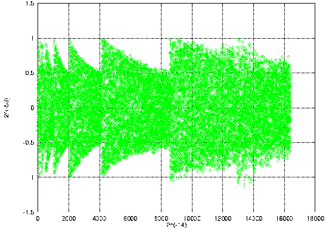
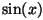

Next: Random number
generators
Up: Numerical
Techniques
Previous: Root-finding
Approximation theory
Motivating problems in this context are:
-
CAD-CAM applications
-
implementation of elementary functions on a chip
Of all the modules, this is the most comprehensive one since it covers
several mathematical techniques, including interpolation, Chebyshev approximation,
splines, least squares and rational approximation. For all except the last
of these techniques, polynomials are used as approximating functions. After
a brief theoretical discussion, we emphasize how the nature of the problem
influences the choice of the approximation method. There is a cross-reference
to the arithmetic part of the course, since the quality of the numeric
data will determine whether the problem needs to be tackled in the least-squares
or in the interpolation sense. The implementation of the function ex
in the mathematical function library
fdlibm, made publicly available
by SUN [6], is thoroughly discussed as
an example, including the choice of approximation and the computer arithmetic
details of the implementation.

Scatterplot for the polynomial approximation
of degree 13 for 
used in fdlibm
Stefan.Becuwe
1999-05-05